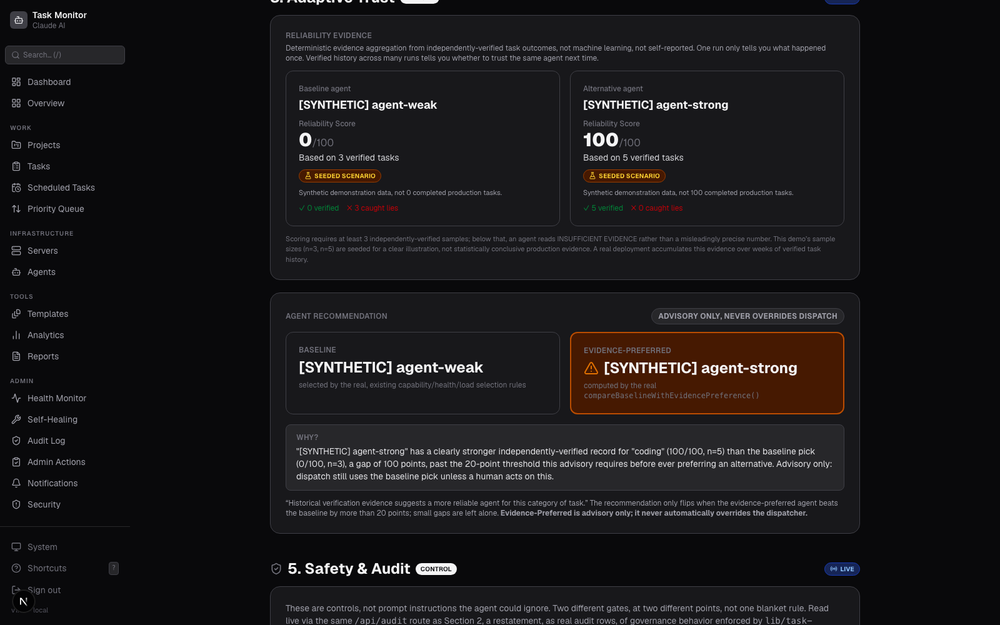
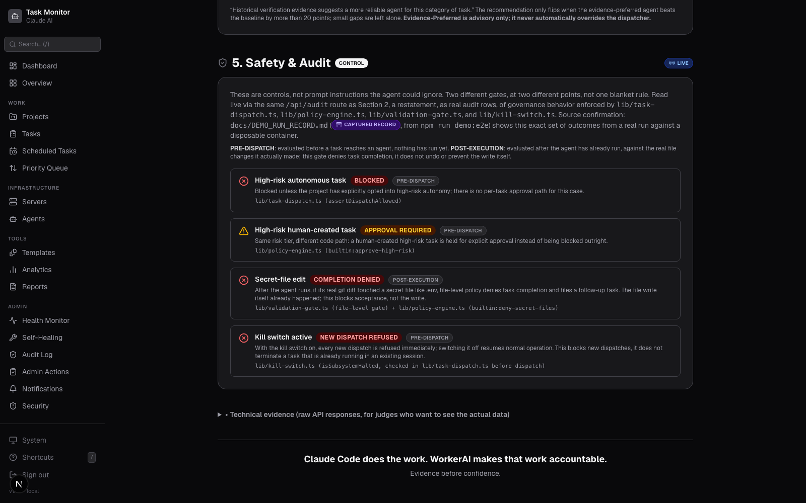

An AI agent's own "success" claim is never the answer.
WorkerAI dispatches tasks to autonomous Claude CLI agents on remote servers, then independently re-executes the real lint/typecheck/test/build commands against the agent's own workspace before trusting a single "done." It's a task orchestration platform with backend-enforced safety gates, a scoped external API, and a standalone Python/FastAPI verifier microservice.
The two things worth watching
Both run against real commands and a real HTTP round trip; nothing on this page is mocked output.
1. Independent verification never trust self-reports
An autonomous task's own [WORKERAI_VALIDATION] result: passed self-report is
labeled AGENT_REPORTED and only resolves to INDEPENDENTLY_VERIFIED
after the real lint/typecheck/test/build commands are re-executed against the task's actual
workspace and the real exit codes agree. The command allowlist is a literal array, enforced
even if a caller tries to override it, so there's no injection surface via a crafted command string.
[agent] edited add.js: introduced a regression (add() now concatenates instead of summing)
[agent] self-reported completion: result: passed
STEP 4: Independent validation (REAL commands, REAL exit codes)
[lint] exitCode=0
[typecheck] exitCode=0
[test] exitCode=1 AssertionError: add(2,2) should be 4, got '22' !== 4
[build] exitCode=0
STEP 5: Verdict
agent self-report: PASSED
independent re-execution: FAILED
RESULT: independent check disagrees with the agent's self-report. Task marked FAILED, not completed.
2. Python / FastAPI verifier service cross-language, HMAC-signed
verifier-service/ is a standalone FastAPI microservice that independently
classifies autonomous-task completion evidence into the same verdict vocabulary used by
the Node backend. It deliberately does not execute commands or hold SSH credentials: that
trust boundary stays in Node. Service-to-service calls are HMAC-SHA256 signed with a
5-minute replay window.
[all independent checks pass]
verification_state: INDEPENDENTLY_VERIFIED allowed: true
[agent claims success but build actually failed]
verification_state: VERIFICATION_FAILED allowed: false
reason: "agent reported success but independent re-execution disagreed: build(exit=1)"
[agent touched a sensitive file (.env)]
verification_state: VERIFICATION_FAILED allowed: false
risk_flags: ["policy:sensitive_file_touched:.env"]
Architecture at a glance
Full detail in claude-task-monitor/docs/architecture.md; this is the summary.
Safety gates, fail-closed
A kill switch, a declarative policy engine, and a high-risk autonomy gate sit in front of every dispatch. If the kill switch's own state can't be read, it halts everything rather than assuming it's safe.
Scoped external API: /api/v1
Bearer-token service accounts scoped to an explicit project list, enforced in the Prisma query itself (where: id in client.projectIds), not a UI filter.
Claude usage & dispatch
Fetches live session/week usage from a worker's tmux session via SSH; blocks dispatch at ≥90% usage with an automatic countdown-triggered retry.
Stack
Next.js 15 (App Router, Turbopack) + TypeScript + Prisma 7 / Postgres on the main app; FastAPI + Pydantic on the verifier service.
Implemented vs. planned, stated plainly
| Capability | Status |
|---|---|
| Independent verification state machine | Implemented |
| Kill switch / policy engine / dispatch locking | Implemented |
Scoped service-account tenant isolation (/api/v1) | Implemented, 16 passing tests |
| Python/FastAPI verifier service | Implemented, 20 passing tests |
| Verifier service wired into live task completion | Not yet, documented next step |
| Full multi-tenancy (per-user accounts) | Not attempted, deliberately (see architecture.md) |
Live dashboard: Demo Day fixtures
Real database reads of real stored task/audit state (synthetic seed data, not fabricated display values).



